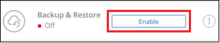
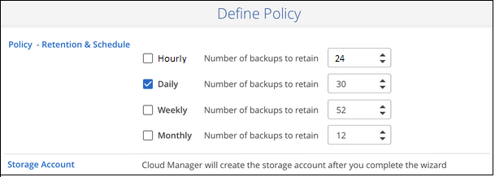
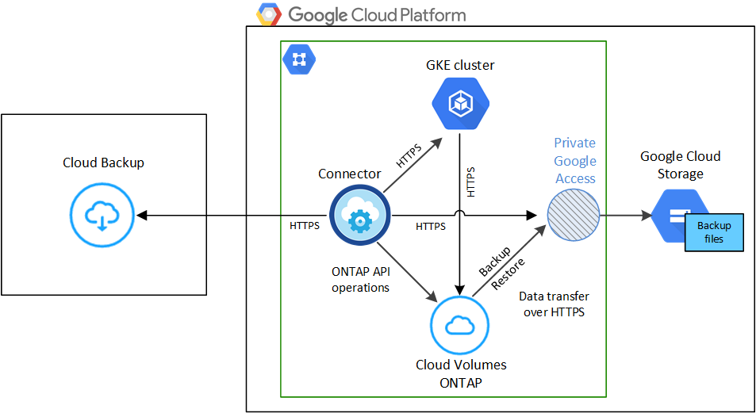
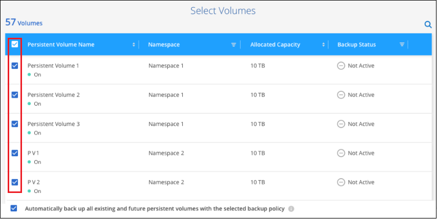

ドキュメントの変更をリクエスト
ドキュメントの変更をリクエスト GitHub で編集
GitHub で編集 寄稿者向けガイド
寄稿者向けガイドKubernetes の永続ボリュームのデータを Google Cloud ストレージにバックアップする
GKE Kubernetes クラスタ上の永続ボリュームから Google Cloud ストレージへのデータのバックアップを開始するには、いくつかの手順を実行します。
クイックスタート
これらの手順を実行してすぐに作業を開始するか、残りのセクションまでスクロールして詳細を確認してください。
{kind=link}
-
Kubernetes クラスタを Cloud Manager の作業環境として検出しておきます。
-
Trident がクラスタにインストールされている必要があります。 Trident のバージョンは 21.1 以降である必要があります。
-
バックアップする永続ボリュームの作成に使用されるすべての PVC で、「 snapshotPolicy 」が「 default 」に設定されている必要があります。
-
クラスタは、そのバックエンドストレージに GCP 上の Cloud Volumes ONTAP を使用している必要があります。
-
Cloud Volumes ONTAP システムで ONTAP 9.7P5 以降が実行されている必要があります。
-
-
バックアップを保存するストレージスペースの有効な GCP サブスクリプションがあります。
-
Google Cloud Project に、事前定義された Storage Admin ロールを持つサービスアカウントがあります。
-
に登録しておきます "Cloud Manager Marketplace のバックアップソリューション"またはを購入したことが必要です "アクティブ化されます" NetApp の Cloud Backup BYOL ライセンス。
作業環境を選択し、右パネルの [ バックアップと復元 ] サービスの横にある [*Enable] をクリックして、セットアップ・ウィザードに従います。

デフォルトポリシーでは、毎日ボリュームがバックアップされ、各ボリュームの最新の 30 個のバックアップコピーが保持されます。毎時、毎日、毎週、または毎月のバックアップに変更するか、システム定義のポリシーの中からオプションを追加する 1 つを選択します。保持するバックアップコピーの数を変更することもできます。

Select Volumes （ボリュームの選択）ページで、バックアップするボリュームを特定します。バックアップファイルは、 Cloud Volumes ONTAP システムと同じ GCP サブスクリプションとリージョンを使用して Google Cloud Storage バケットに格納されます。
要件
Kubernetes の永続ボリュームを Google Cloud ストレージにバックアップする前に、次の要件を確認し、サポートされている構成であることを確認してください。
次の図は、各コンポーネントとその間の準備に必要な接続を示しています。

プライベートエンドポイントはオプションです。
- Kubernetes クラスタの要件
-
-
Kubernetes クラスタを Cloud Manager の作業環境として検出しておきます。 "Kubernetes クラスタの検出方法を参照してください"。
-
Trident はクラスタにインストールされている必要があります。 Trident のバージョンは 21.1 以上である必要があります。を参照してください "Trident のインストール方法" または "Trident バージョンをアップグレードする方法"。
-
クラスタは、そのバックエンドストレージに GCP 上の Cloud Volumes ONTAP を使用している必要があります。
-
Cloud Volumes ONTAP システムは Kubernetes クラスタと同じ GCP リージョンに配置し、 ONTAP 9.7P5 以降を実行している必要があります。
オンプレミス環境の Kubernetes クラスタはサポートされていません。Cloud Volumes ONTAP システムを使用するクラウド環境では、 Kubernetes クラスタのみがサポートされます。
-
バックアップする永続ボリュームの作成に使用されるすべての Persistent Volume Claim オブジェクトで、「 snapshotPolicy 」が「 default 」に設定されている必要があります。
これは、注釈の下に「 SnapshotPolicy 」を追加することで、個々の PVC に対して行うことができます。
kind: PersistentVolumeClaim apiVersion: v1 metadata: name: full annotations: trident.netapp.io/snapshotPolicy: "default" spec: accessModes: - ReadWriteMany resources: requests: storage: 1000Mi storageClassName: silverバックエンド・ストレージに関連付けられているすべての PVC に対してこの操作を行うには ' backend.json ファイルの defaults に 'napshotPolicy' フィールドを追加します
apiVersion: trident.netapp.io/v1 kind: TridentBackendConfig metadata: name: backend-tbc-ontap-nas-advanced spec: version: 1 storageDriverName: ontap-nas managementLIF: 10.0.0.1 dataLIF: 10.0.0.2 backendName: tbc-ontap-nas-advanced svm: trident_svm credentials: name: backend-tbc-ontap-nas-advanced-secret limitAggregateUsage: 80% limitVolumeSize: 50Gi nfsMountOptions: nfsvers=4 defaults: spaceReserve: volume exportPolicy: myk8scluster snapshotPolicy: default snapshotReserve: '10' deletionPolicy: retain
-
- サポートされる GCP リージョン
-
Cloud Backup はすべての GCP リージョンでサポートされます "Cloud Volumes ONTAP がサポートされている場合"。
- ライセンス要件
-
クラウドバックアップは従量課金制のライセンスで、を使用したサブスクリプション "GCP Marketplace" は、 Cloud Backup を有効にする前に必要です。Cloud Backup の請求は、このサブスクリプションを通じて行われます。 "作業環境ウィザードの詳細 & 資格情報ページから購読できます"。
Cloud Backup BYOL ライセンスを使用するには、ライセンスの期間と容量にサービスを使用できるように、ネットアップから提供されたシリアル番号が必要です。 "BYOL ライセンスの管理方法について説明します"。
また、バックアップを保存するストレージスペースの Google サブスクリプションが必要です。
- GCP サービスアカウント
-
事前定義された Storage Admin ロールを持つサービスアカウントが Google Cloud Project に必要です。 "サービスアカウントの作成方法について説明します"。
Cloud Backup を有効にしています
Kubernetesの作業環境からCloud Backupをいつでも直接有効にできます。
-
作業環境を選択し、右パネルの [ バックアップと復元 ] サービスの横にある [*Enable] をクリックします。
-
バックアップポリシーの詳細を入力し、 * Next * をクリックします。
バックアップスケジュールを定義して、保持するバックアップの数を選択できます。
-
バックアップする永続ボリュームを選択します。
-
すべてのボリュームをバックアップするには、タイトル行（
 ）。
）。 -
個々のボリュームをバックアップするには、各ボリュームのボックス（
 ）。
）。
-
-
今後追加されるすべてのボリュームでバックアップを有効にするには、「今後のボリュームを自動的にバックアップします…。」のチェックボックスをオンのままにします。この設定を無効にした場合は、将来のボリュームのバックアップを手動で有効にする必要があります。
-
Activate Backup * をクリックすると、選択した各ボリュームの初期バックアップの実行が開始されます。
バックアップファイルは、 Cloud Volumes ONTAP システムと同じ GCP サブスクリプションとリージョンを使用して Google Cloud Storage バケットに格納されます。
Kubernetes ダッシュボードが表示され、バックアップの状態を監視できます。
可能です "ボリュームのバックアップを開始および停止したり、バックアップを変更したりできます スケジュール"。また可能です "バックアップファイルからボリューム全体をリストアする" GCP 内の同じ Kubernetes クラスタまたは別の Kubernetes クラスタ（同じリージョン内）上の新しいボリュームです。